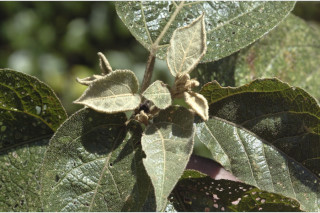
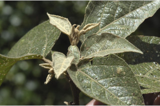
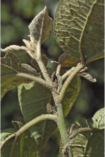
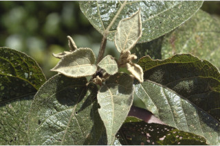
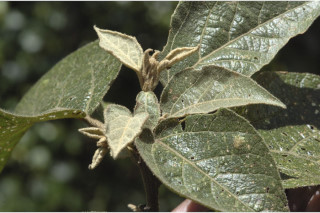
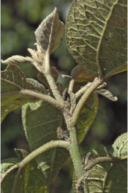
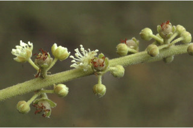
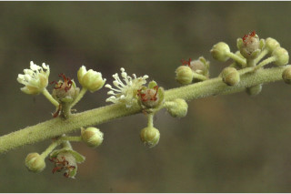

Trees up to 10 m tall.
10 ಮೀ. ಎತ್ತರದವರೆಗೆ ಬೆಳೆಯುವ ಮರಗಳು.
10 മീറ്റര് വരെ ഉയരമുളള മരങ്ങള്.
மரங்கள் 10 மீ. உயரம் வரை வளரக்கூடியது.
Bark smooth, brownish; blaze yellowish.
ತೊಗಟೆ ನಯವಾಗಿದ್ದು ಕಂದು ಬಣ್ಣದಲ್ಲಿರುತ್ತದೆ; ಕಚ್ಚು ಮಾಡಿದ ಜಾಗ ಹಳದಿ ಬಣ್ಣದಲ್ಲಿರುತ್ತದೆ.
തവിട്ടുനിറത്തിലുളള, മിനുസമുളള പുറംതൊലി; വെട്ട്പാടിന് മഞ്ഞ നിറം.
மரத்தின் பட்டை வழுவழுப்பானது, ப்ரவுன் நிறமானது; உள்பட்டை மஞ்சள் நிறமானது.
Branchlets terete, densely stellate hairy.
ಕಿರುಕೊಂಬೆಗಳು ದುಂಡಾಗಿದ್ದು ದಟ್ಟವಾದ ನಕ್ಷತ್ರ-ಮೃದುತುಪ್ಪಳದಿಂದ ಕೂಡಿರುತ್ತವೆ.
ലഘുവായ ഇലകള്, ഏകാന്തരക്രമത്തില് സര്പ്പിളമായി അടുക്കിയിരിക്കുന്നു; നക്ഷത്രാകാര രോമിലമായ ഇലഞെട്ടിന് 0.8 സെ.മീ മുതല് 3 സെ.മീ വരെ നീളം; പത്രഫലകത്തിന് 3.8 സെ.മീ മുതല് 13 സെ.മീ വരെ നീളവും 2 സെ.മീ മുതല് 6 സെ.മീ വരെ വീതിയും, വീതിയേറിയ അണ്ഡാകാരവുമാണ്, പത്രാഗ്രം നിശിതംതൊട്ട് ദീര്ഘാഗ്രം വരെയാകാം, പത്രാധാരം ഉപഹൃദയാകാരത്തിലാണ്, അരികുകള് ക്രമരഹിതമായി ദന്തുരമോ ദന്തിതമോ ആണ്, ഇരുഭാഗത്തും നക്ഷത്രാകാരരോമിലമാണ്; പത്രാധാരത്തില് 3 ഞരമ്പുകളുണ്ട്; 4 മുതല് 6 വരെ ജോഡി ദ്വിതീയ ഞരമ്പുകള്; ശക്തമായി ജാലിതമായിട്ടുളള തൃതീയ ഞരമ്പുകള്; പത്രഫലകവും ഇലഞെട്ടും ചേരുന്ന സന്ധിയില്, കീഴ്ഭാഗത്തായി 2 ജോഡി ഞെട്ടുളള ഗ്രന്ഥികളുണ്ട്.
சிறிய நுனிக்கிளைகள் குறுக்குவெட்டுத் தோற்றத்தில் வளையமானது, அடர்த்தியாக நட்சத்திர வடிவ உரோமங்களுடையது.
Leaves simple, alternate, spiral; petiole 0.8-3 cm long, stellate hairy; lamina 3.8-13 x 2-6 cm, broadly ovate, apex acute to acuminate, base subcordate, irregularly serrate or crenate, stellate hairy on both surfaces, trinerved at base; secondary_nerves 4-6 pairs; tertiary_nerves strongly reticulate; stipitate glands 2 pairs, at the junction of lamina and petiole beneath.
ಎಲೆಗಳು ಸರಳವಾಗಿದ್ದು,ಪರ್ಯಾಯ ಮತ್ತು ಸುತ್ತು ಜೋಡನಾ ವ್ಯವಸ್ಥೆಯಲ್ಲಿರುತ್ತವೆ; ತೊಟ್ಟುಗಳು 0.8-3 ಸೆಂ.ಮೀ. ಉದ್ದವಿರುತ್ತವೆ;ಪತ್ರಗಳು 3.8 -13 X 2 - 6 ಸೆಂ. ಮೀ. ಗಾತ್ರ, ವಿಶಾಲವಾದ ಅಂಡಾಕಾರ, ಚೂಪಾದುದರಿಂದ ಕ್ರಮೇಣ ಚೂಪಾಗುವ ಮಾದರಿಯ ತುದಿ, ಉಪ-ಹೃದಯಾಕಾರದ ಬುಡ,ಅನಿಯತವಾಗಿ ಗರಗಸ ದಂತಿತ ಅಥವಾ ದುಂಡೇಣಿನ ದಂತಗಳನ್ನೊಳಗೊಂಡ ಅಂಚು ಹೊಂದಿರುತ್ತವೆ; ಪತ್ರದ ಎರಡೂ ಬದಿಗಳು ದಟ್ಟವಾದ ನಕ್ಷತ್ರ-ರೋಮಗಳಿಂದ ಕೂಡಿರುತ್ತವೆ;ಪತ್ರಗಳು ಬುಡದಲ್ಲಿ 3 ನಾಳಗಳನ್ನು ಹೊಂದಿರುತ್ತವೆ;ಎರಡನೇ ದರ್ಜೆಯ ನಾಳಗಳು 4-6 ಜೋಡಿಗಳಿರುತ್ತವೆ ಮೂರನೇ ದರ್ಜೆಯ ನಾಳಗಳು ಧೃಢವಾದ ಜಾಲಬಂಧ ನಾಳ ವಿನ್ಯಾಸದಲ್ಲಿರುತ್ತವೆ; ಪತ್ರದ ತಳ ಬಾಗದ ಬುಡ ಮತ್ತು ತೊಟ್ಟು ಸಂಧಿಸುವಲ್ಲಿ ವೃಂತವುಳ್ಳ 2 ಜೋಡಿ ರಸಗ್ರಂಥಿಗಳು ಇರುತ್ತವೆ.
ആണ്പൂക്കള് അഗ്രത്തിലും പെണ്പൂക്കള് കീഴറ്റത്തുമായ റസീം പൂങ്കുലകളാണ് ഇതിനുള്ളത്.
இலைகள் தனித்தவை, மாற்றுஅடுக்கமானவை, சுழல் போல் அமைந்தது; இலைக்காம்பு 0.8-3 செ.மீ. நீளமானது, நட்சத்திர வடிவ உரோமங்களுடையது; இலை அலகு 3.8-13X2-6 செ.மீ., அகன்ற முட்டை வடிவானது, அலகின் நுனி கூரியது முதல் அதிக்கூரியது, அலகின் தளம் இதய (கார்டேட்) வடிவானது, அலகின் விளிம்பு ரம்ப பற்கள் அல்லது பிறை போன்ற பற்களுடையது, அலகின் இருபுறங்களிலும் நட்சத்திர வடிவ உரோமங்களுடையது, அலகின் தளத்தில் மூன்று நரம்புகளுடையது; இரண்டாம் நிலை நரம்புகள் 4-6 ஜோடிகள்; மூன்றாம் நிலை நரம்புகள் வலைப்பின்னல் போன்றது; அலகு இலைக்காம்புடன் இணையுமிடத்தில் அலகின் பின்புறத்தில் இரண்டு ஜோடி காம்புடைய சுரப்பிகளுடையது.
Inflorescence racemes with male flowers towards apex and female flowers at base.
ಮಧ್ಯಾಭಿಸರ ಪುಷ್ಪಮಂಜರಿಯಲ್ಲಿ ಗಂಡು ಹೂಗಳು ತುದಿಯ ಕಡೆಗಿದ್ದು ಹೆಣ್ಣು ಹೂಗಳು ಬುಡದಲ್ಲಿರುತ್ತವೆ.
3 വിത്തുവീതമുളള വെളുത്ത നക്ഷത്രാകാര രോമിലമായ, 0.8 സെ.മീ മൂതല് 1 സെ.മീ വരെ വ്യാസമുളള കായ കാപ്സ്യൂള് ആണ്.
ரெசீம் மஞ்சரி, ஆண்மலர்கள் மஞ்சரியின் நுனியிலும் மற்றும் பெண்மலர்கள் ரெசீமின் தளத்திலும் காணப்படுபவை.
Capsule, 0.8-1 cm diameter, subglobose, white stellate hairy; seeds 3.
ಸಂಪುಟ ಫಲಗಳು 0.8 –1 ಸೆಂ.ಮೀ. ವ್ಯಾಸ ಹೊಂದಿರುತ್ತವೆ ಹಾಗೂ ಉಪ-ದುಂಡಾಕಾರವಾಗಿದ್ದು ಬಿಳಿ ಬಣ್ಣದ ನಕ್ಷತ್ರ-ರೋಮಗಳಿಂದ ಕೂಡಿರುತ್ತವೆ ಮತ್ತು 3ಬೀಜಗಳನ್ನೊಳಗೊಂಡಿರುತ್ತವೆ.
வெடிகனி (கேப்சூல்), 0.8-1 செ.மீ. குறுக்களவுடையது, கோளவடிவானது, வெள்ளை நிறமான நட்சத்திர வடிவ உரோமங்களுடையது; விதைகள் 3 கொண்டது.

 







 
